LATEST NEWS
PEPTIDE RESEARCH · CLINICAL DATA · FIELD TOOLS
13UPDATES
2026LATEST
LIVERESEARCH
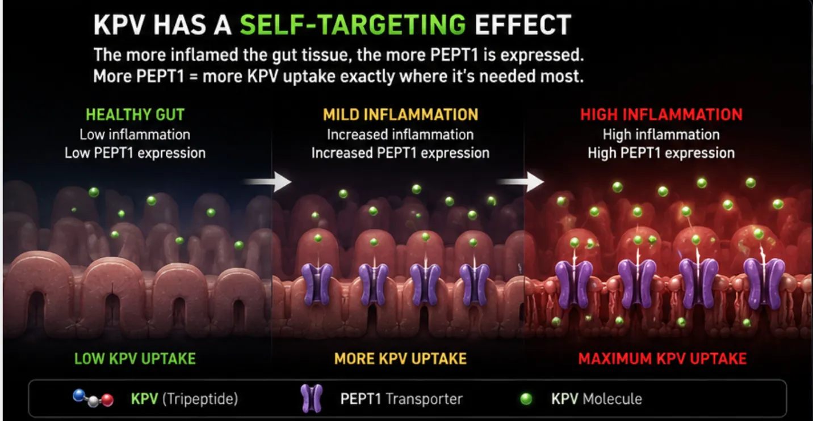

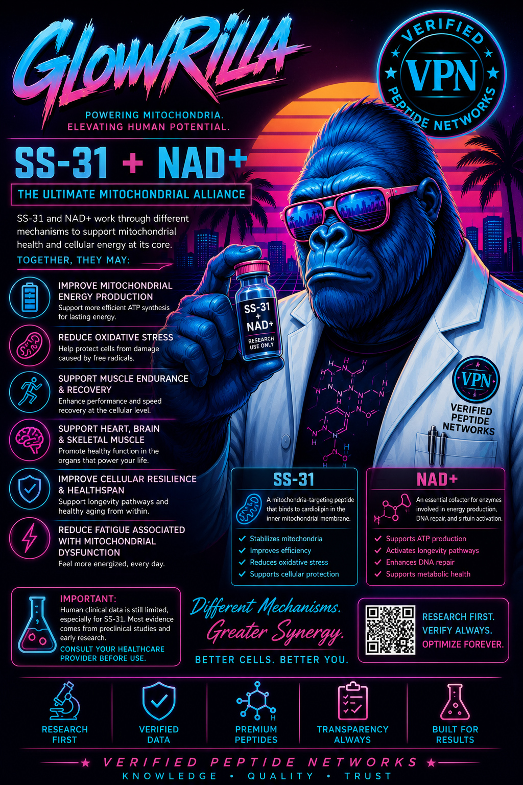
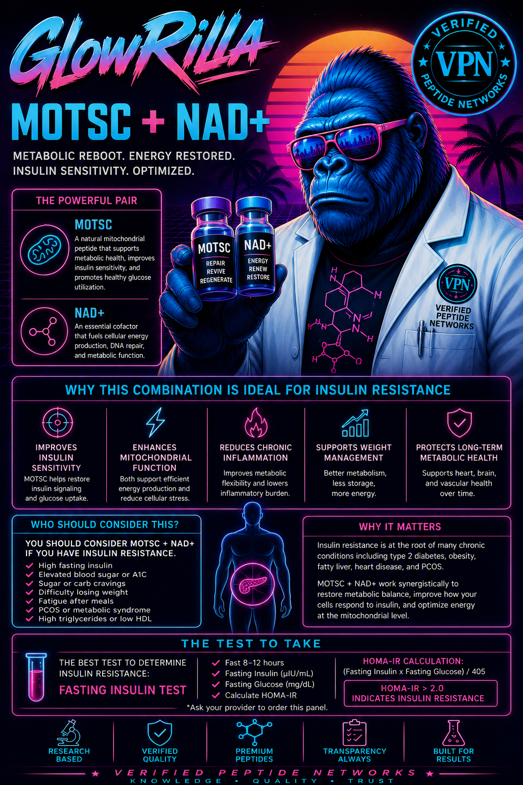
| Marker | Concerning | Optimal |
|---|---|---|
| Fasting Insulin | > 8 µIU/mL | < 5 µIU/mL |
| HOMA-IR | > 2.0 | < 1.5 |
| Fasting Glucose | > 100 mg/dL | < 100 mg/dL |
| Triglycerides | > 150 mg/dL | < 150 mg/dL |
| HDL Cholesterol | < 50(M)/60(F) | > 50/60 mg/dL |
| Regimen | Wks | Weight Loss |
|---|---|---|
| Placebo + TZP 5mg | 16 | -10.0% |
| Elora 3mg + TZP 5mg | 16 | -17.0% |
| Elora 9mg + TZP 5mg | 16 | -20.5% |
| Placebo + TZP 15mg | 32 | -17.8% |
| Elora 9mg + TZP 15mg | 32 | -29.0% 🔥 |
| Elora 9mg + TZP 15mg (Study B) | 24 | -25.5% 🔥 |
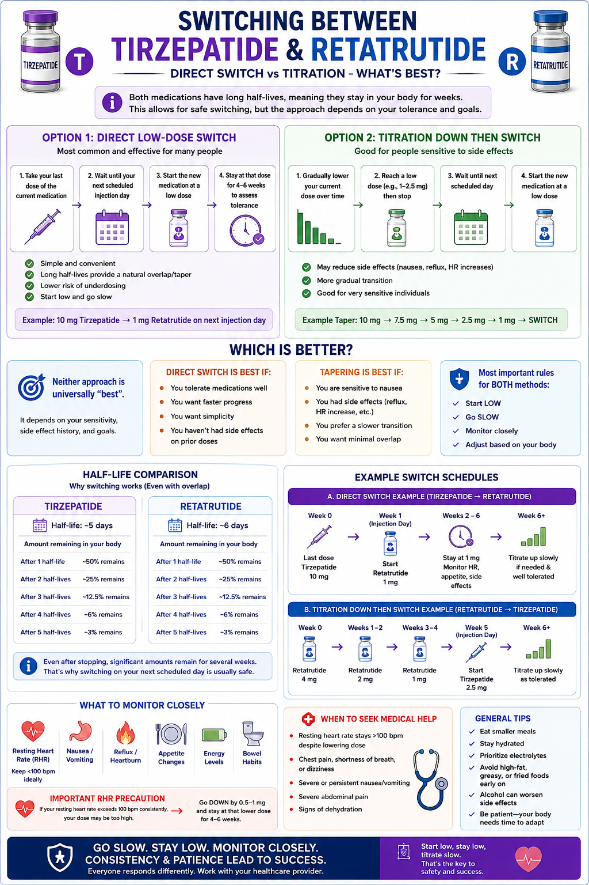
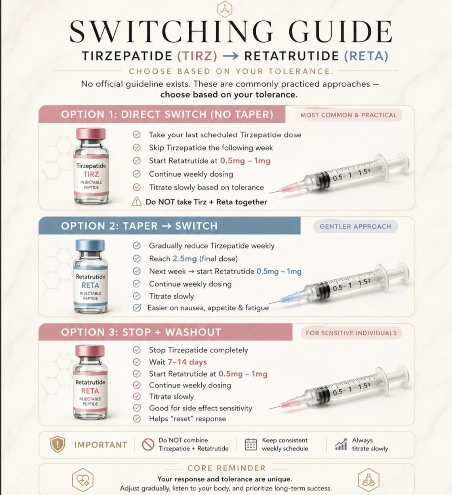
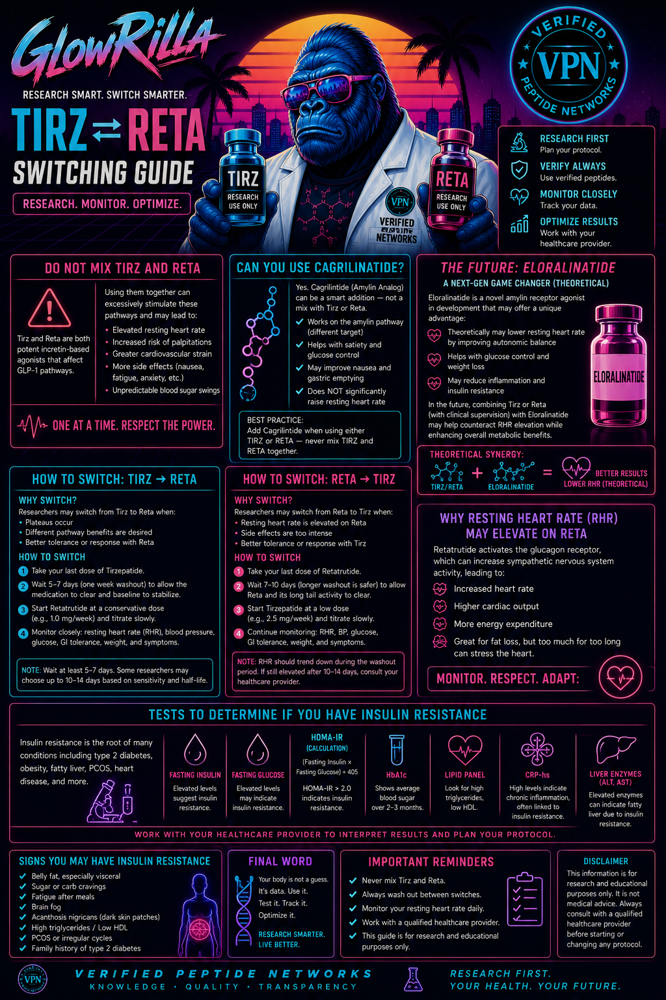
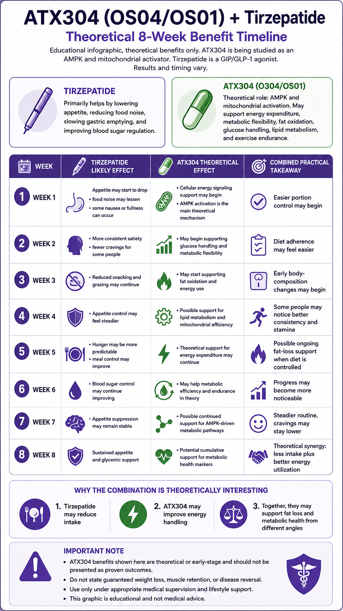
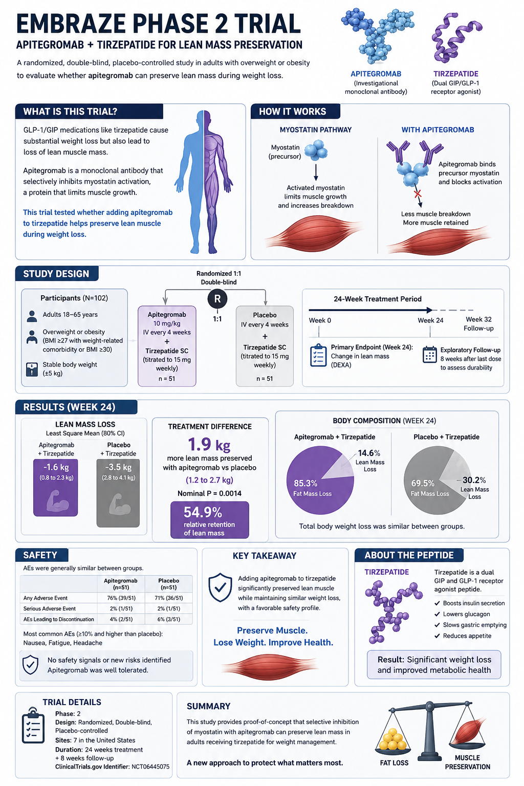
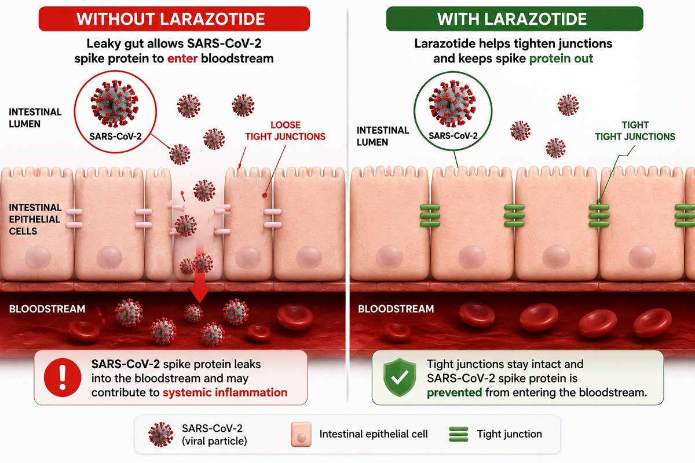
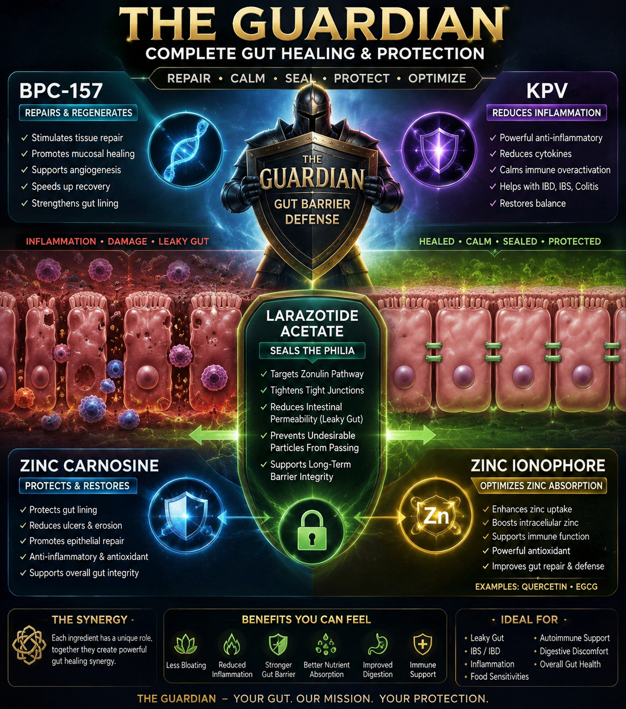
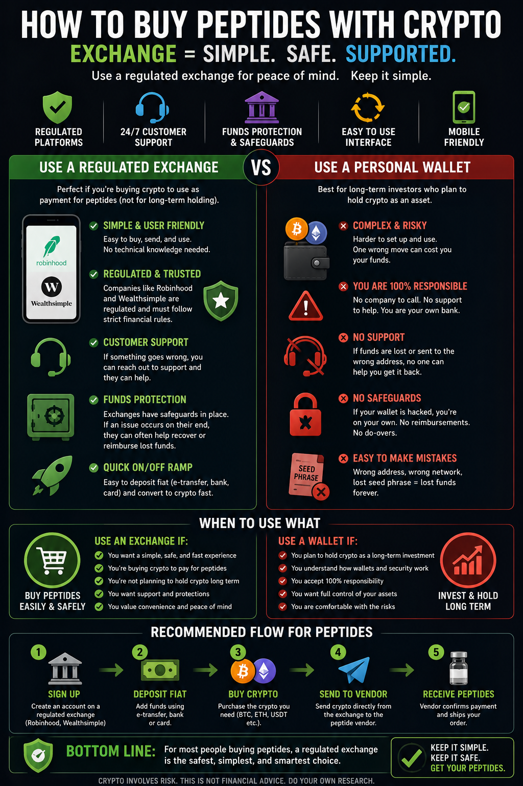